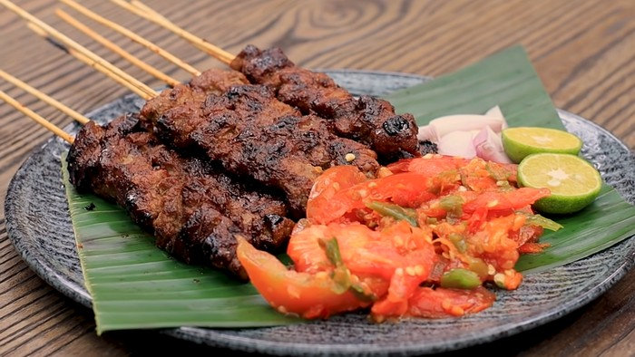
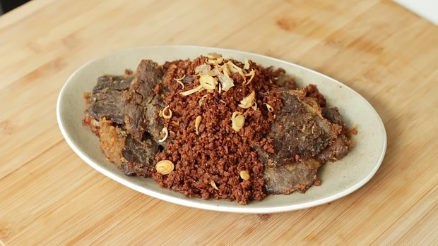

4 Resep Olahan Daging Sapi,Mudah dibuat dan Dijamin Menggoyang Lidah
Punya banyak stok daging Idul adha, sudah menentukan ingin masak apa, belum nih, Beauties? Kalau masih bingung, kamu bisa mengecek resep olahan daging sapi di situs Cookingrara. Resep ini cenderung mudah diikuti dan bisa jadi stok untuk di rumah. Yuk, simak 4 resep olahan daging sapi yang praktis dan enak dari Cookingrara. Simak Selengkapnya!
1. Sate Maranggi
Bahan untuk 12 tusuk:
- 300 gr daging has dalam
Bumbu halus:- 6 siung bawang putih
- 10 siung bawang merah
- 3 cm lengkuas, iris
- 2 sdt ketumbar, sangrai
- 3 sdm air asam jawa
- 4 sdm Kecap Sedaap Kedelai Hitam Special
- 1 sdm gula merah
- 1 sdt garam
- 1 sdt merica
- ½ sdt kaldu jamur
Bahan sambal tomat:- 2 buah tomat
- 5 cabai rawit merah
- 15 cabai rawit hijau
- 1 siung bawang putih
- 3 siung bawang merah
- 2 buah jeruk limau
- ½ sdt garam
- 1 sdt gula
Langkah Pembuatan:
- Iris daging memanjang kurang lebih selebar jari, dengan arah memotong serat.
- Blender semua bumbu halus hingga benar-benar halus, tuang ke dalam daging aduk rata, marinasi daging minimal 1-2 jam.
- Setelah dua jam, tusuk daging menggunakan tusuk sate yang sudah direndam terlebih dahulu, tusuk daging dengan arah zig-zag.
- Panaskan griller, oles dengan sedikit minyak/emak sapi, panggang kedua sisi sate sambil sesekali dioles dengan sisa bumbu halus. Panggang sate dengan tingkat kematangan sesuai selera.
- Untuk sambal tomat, ulek bawang putih dan garam hingga halus. Tambahkan cabai rawit merah dan hijau ulek hingga halus, masukkan irisan tomat bumbui dengan gula, beri perasan jeruk limau, lalu diaduk rata.
- Sajikan sate maranggi dengan sambal tomat, irisan bawang merah, jeruk limau, dan kecap manis.
2. Empal Serundeng
Bahan (untuk 8-9 porsi):
- 300 gr daging has dalam
Bumbu halus:- 1,2 kg daging sapi topside
- 1,2 liter air
- 2 sdt garam
- 2 sdt kaldu bubuk
- ¼ sdt merica
Bahan lainnya :- 100 gr kemiri
- 100 gr lengkuas, iris
- 80 gr gula merah
- 2 sdm air asam jawa
- 150 ml santan instan
- 4 batang serai, geprek, potong
- 6 lembar daun salam
- 4 lembar daun jeruk
- 1 sdt garam
- 1 sdm gula pasir
- 1 sdt kaldu bubuk
- 500 ml air
- 500 ml air kaldu sapi
Bahan bumbu halus:- 15 siung bawang putih
- 18 buah bawang merah
- 3 cm jahe, iris
- 2 sdt ketumbar
- ½ butir pala
- 100 ml Minyak Goreng Fortune
Pelengkap:- Nasi putih Beras Premium Fortune
- Bawang Goreng
- Minyak Goreng Fortune untuk menggoreng
Langkah Pembuatan:
- Masukkan daging, air, garam, kaldu bubuk, dan merica ke dalam presto. Presto selama 30 menit.
- Dinginkan daging, potong-potong lalu pukul-pukul perlahan dengan ulekan batu atau rolling pin.
- Haluskan kemiri dengan food processor lalu sangrai hingga wangi dan sedikit kecokelatan dan sisihkan.
- Haluskan lengkuas dengan sedikit air hingga halus lalu sisihkan.
- Blender bawang merah, bawang putih, jahe, ketumbar, pala, dan Minyak Goreng Fortune hingga halus.
- Tumis bumbu halus hingga wangi lalu masukkan serai, daun salam, dan daun jeruk, dan tumis kembali.
- Masukkan kemiri dan lengkuas, aduk rata, lalu masak di api kecil hingga wangi.
- Tambahkan air, santan, air asam jawa, gula merah, garam, gula pasir, kaldu bubuk, dan air kaldu sapi, lalu diaduk rata.
- Masukkan daging, masak di api sedang hingga air menyusut, lalu sisihkan daging.
- Masak kembali sisa bumbu di api sedang kecil hingga menyusut dan mengeluarkan minyak, dan sisihkan.
- Panaskan Minyak Goreng Fortune lalu goreng daging hingga kecokelatan, lalu tiriskan.
- Goreng serundeng di api sedang kecil hingga kecokelatan, dan sisihkan.
- Empal serundeng siap disajikan dengan nasi dan taburan bawang goreng sebagai pelengkap.
3. Kalio Daging & Ubi

Bumbu halus (untuk 10-11 porsi):
10 buah bawang merah 5 buah bawang putih 15 buah cabai merah besar atau 20 cabai keriting 10 buah cabai rawit merah 2 cm jahe 8 buah kemiri 1 sdt ketumbar, sangrai 3 cm kunyit ½ sdt jintan Minyak goreng
Bahan pelengkap:800 gr daging sengkel, potong 500 gr ubi jepang, kupas, potong
Bahan aromatik:2 batang serai 2 jempol lengkuas 3 lembar daun salam 3 lembar daun jeruk 100 gr kelapa sangrai, opsional
Bahan lainnya:210 ml santan kental 1,2 liter air/secukupnya Royco Bumbu Kaldu Sapi ¼ sdt gula, opsional
Rempah:2 butir cengkih 3 butir kapulaga ½ batang kayu manis 1 butir bunga lawang
Langkah Pembuatan:
- Blender bumbu halus dengan minyak, lalu tumis hingga minyak keluar.
- Masukkan serai, lengkuas, daun salam, daun jeruk, cengkeh, kapulaga, kayu manis, bunga lawang, tumis hingga wangi, lalu masukkan kelapa sangrai yang sudah di blender, dan diaduk rata.
- Masukkan daging, air, garam, merica dan royco kaldu sapi, masak hingga 90 menit.
- Panaskan minyak, lalu goreng ubi hingga sedikit kecokelatan.
- Masukkan ubi, santan, tambahan air, masak kembali hingga air menyusut dan mengental.
- Kalio daging dan ubi siap disajikan
4.Rendang Daging

Bahan (untuk 12 pcs):
- 600 gr daging sapi sengkel, potong
- 5 siung bawang putih
- 7 siung bawang merah
- 5 butir kemiri
- 8 cabai keriting merah
- 2 cabai merah
- 3 cm jahe
- 80 ml minyak kelapa
- 2 batang serai, potong dan geprek
- 1 lengkuas, iris dan geprek
- 5 lembar daun jeruk purut
- 2 lembar daun kunyit
- 1 lembar daun pandan
- 3 lembar daun salam
- 500 ml air
- >500 ml santan kental
Rempah kering:- 2 sdt lada putih bubuk
- 1 sdm ketumbar bubuk
- 2 sdt jinten bubuk
- ¼ sdt kayu manis bubuk
- 1 sdt pala bubuk
- 1 sdt bunga lawang bubuk
- 1 sdt kapulaga bubuk
- 1 sdt cengkeh bubuk
- 1 sdt cabai bubuk
Lainnya:- ½ sdm garam
- 2 sdt gula
- 1 sdt kaldu jamur
Langkah Pembuatan:
- Blender bawang merah, bawang putih, kemiri, cabai merah, cabai keriting merah, dan jahe menggunakan minyak kelapa.
- Campurkan daging dengan rempah kering lalu ratakan sambil dipijat-pijat, agar bumbu lebih meresap dan bisa dimarinasi semalaman lalu tambahkan garam.
- Panaskan pan dan tuang bumbu halus, tambahkan serai, lengkuas, daun salam, daun jeruk purut, daun kunyit, dan daun pandan lalu tumis jangan sampai terlalu kering. Kemudian masukkan daging yang sudah dimarinasi sampai tersangrai dengan baik lalu masukkan santan dan air, kemudian aduk rata.
- Masukkan garam, gula dan kaldu jamur lalu masak hingga mendidih menggunakan api sedang lalu gunakan api kecil dan tutup pan sambil sesekali diaduk dan masak hingga meresap.
- Saat air sudah akan habis, masak rendang dengan api kecil sambil terus diaduk-aduk hingga kering dan bumbu menempel pada daging.
- Rendang siap disajikan atau disimpan dalam wadah tertutup dan letakkan di lemari es.
Membaca keempat resep di atas langsung jadi lapar, nggak sih, Beauties? Kira-kira dari keempat resep tersebut, Beauties mau masak yang mana, nih?